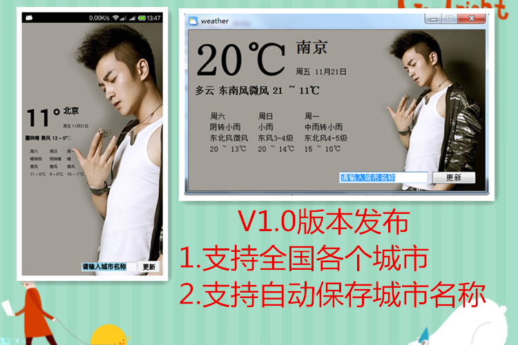
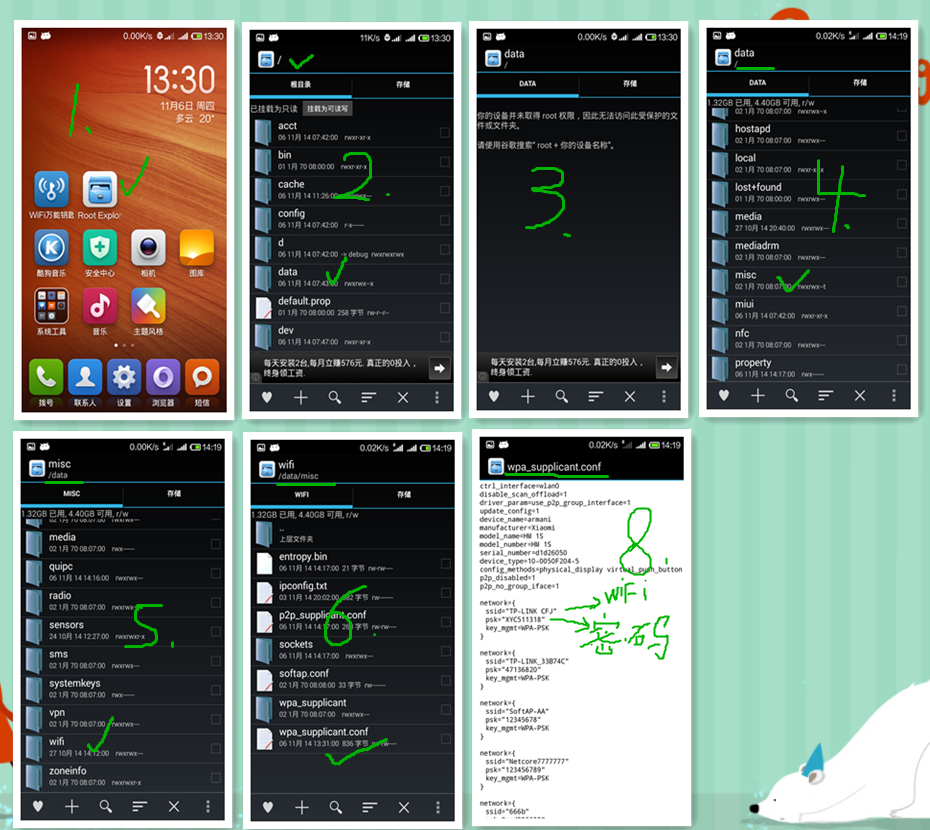

-
STM8 IAP

描述：
一直想自己写一个bootloader，以前经常使用STM32和STC的单片机， STC单片机我没有IAP的，STM32比较复杂一直弄不懂怎么个启动流程的，导致一直耽搁着。 最近工作需要用到STM8,很容易上手使得我工作提前完成了，但是下一步工作有没有到；这些天都在等硬件工程师画板打样。闲着很无聊，就翻翻STM8的手 册发现STM8可以IAP啊，于是又想谢谢看能写的出来吗？ 第一步：先看手册关于flash的分布，了解STM8的flash分布 第二步：了解STM8的启动流程，这部分都找不到具体的，后来放狗找到了这一篇blog；让我彻底明白了STM8的启动流程了。 第三步：怎样重定位中端向量，又是放狗，找到一个网友写的重定位程序，很简单。 于是写了一个小程序，测试能够重定位中端向量 第四步：修改APP的flash定义，编译 第五步：合并hex下载到STM8中
-
世界最低功耗32位ARM(视频)
这 是世界上最低功耗的32位基於ARM Cortex-M0+的ARM处理器，针对可穿载应用(可支持基本触摸功能)和物联网的传感器网络，一枚电池可运作长达十年。这个全新的超低功耗 Atmel | SMART SAM L21 基於ARM Cortex-M0+ 内核MCU只耗用对手同类方案的3分1电量，及可以低於35uA/MHz水平操作活跃模式，保留32kB闪存并以900nA运行实时时钟。视频中 Atmel高级产品经理Andreas Eieland演示以掌心体温透过Peltier Element驱动SAM L21，足以调整一个音频档案并以1MHz AM调幅传送至附近的无线电接收器。这展示出SAM L21的产品亮点 -支持在活跃模式的超低功耗，毋须限制闪存或SRAM大小，绝对适合IoT和其他需要嵌入式大容量存储器的电池驱动应用。
-
只有两个器件的USB温度记录器

描述：
我创建这个项目是因为我想学习PIC单片机和USB协议。我也想知道我能把USB设备做到多小。我把器件减少到2个：一个PIC16F1455单片机和一个USB连接座。这个单片机作为一个USB串口，每秒以ASCII的方式发送温度数据出去。
-
天气查询软件
自己写的不怕有广告推送，(*^__^*) 嘻嘻……
天气信息是从百度服务器获取的。
获取天气信息并解析花了3个小时写代码
做ui花了4个小时多写代码
把数据更新到ui也花了几个小时写代码，其中调整一些布局等
昨天下午开始写的，现在完成了。 -
FreeModbus 移植到Qt5
modbus 在工业应用很广泛。我之前都是听说过而已，我并没有使用过，甚至都不了解是个怎么样的东东，就知道是一种比较使用的通信协议。modbus是应用层的协议 与硬件部相关的，所以任何可以双向通信的链路都可以使用modbus的；想RS232协议、RS485协议、TCP协议等，但是目前好像没有使用在红外 的、433、蓝牙等上，可能是不稳定吧。毕竟是工业用的，稳定第一。
-
电脑蹭网方法(非常详细100%成功)
-

现在到处都有WIFI热点，用手机搜索WIFI热点一堆一堆的。手机蹭网已经成了手机党的必备技能了，使用WIFI万能钥匙就可以连接上大很多WIFI热点；很方便我们这些手机党。
使用手机蹭网并不是今天要介绍的主题，我们今天的主题是《怎样使用电脑蹭网》。
 百度云盘：
百度云盘：